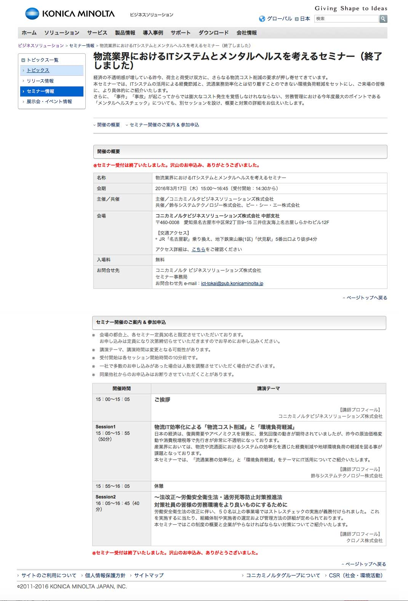
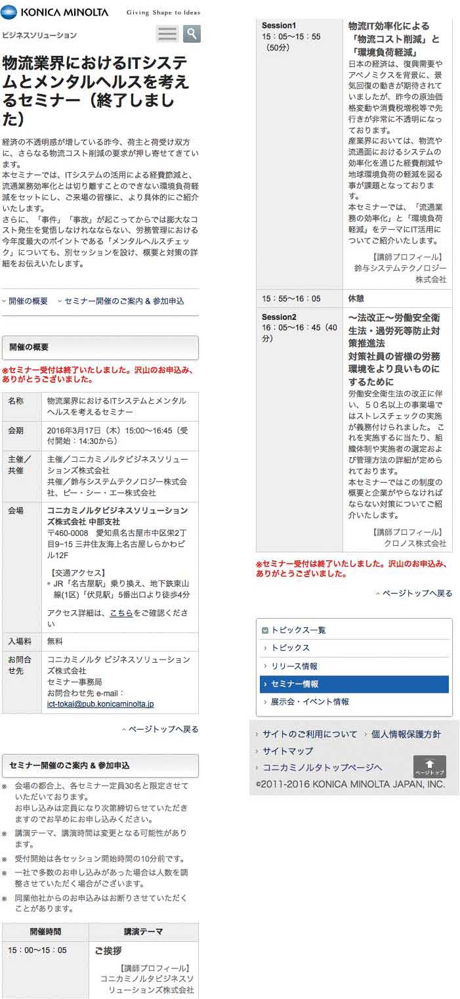
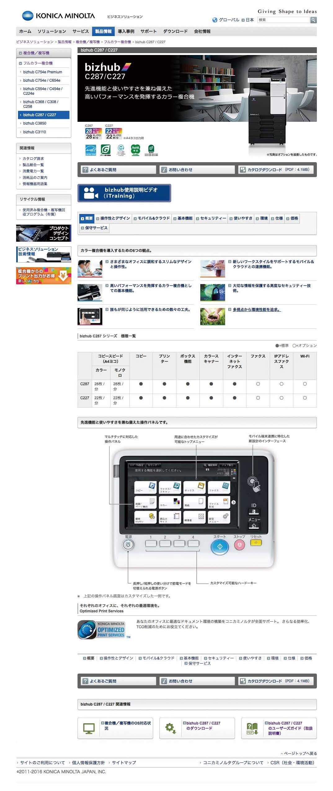

コニカミノルタ
https://www.konicaminolta.jp/business/products/index.html
株式会社あとらす二十一に所属していた時に更新していたサイトになります。主に製品ページの更新を週に2,3回の頻度で更新・新規制作していました。
- ※随時更新のかかるページもあるので、更新時そのままではございません。
- 制作時期
- 株式会社あとらす二十一
- 担当箇所
- ビジネスソリューション,産業用インクジェット、ヘルスケア、プラネタリウム製品、CSR、陸上競技部、ランニングプロジェクト、キンコーズの製品ページ、お知らせの更新など
- 使用ツール
- Photoshop cs6,DreamWeaver cs6
- 制作時間
- お知らせページ（上部2画像）約1時間（確認含め）、1製品（下部2画像、約14ページ）５時間程（確認含め）
セミナーお知らせページ（PC版）
セミナーお知らせページ（SP版）
製品情報ページ（PC版）
製品情報ページ（SP版）